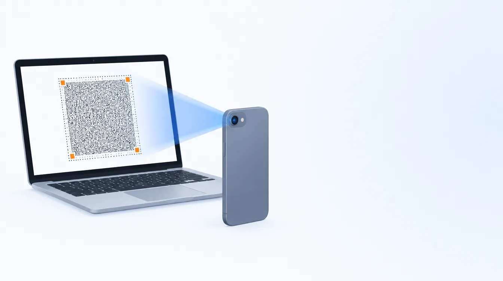
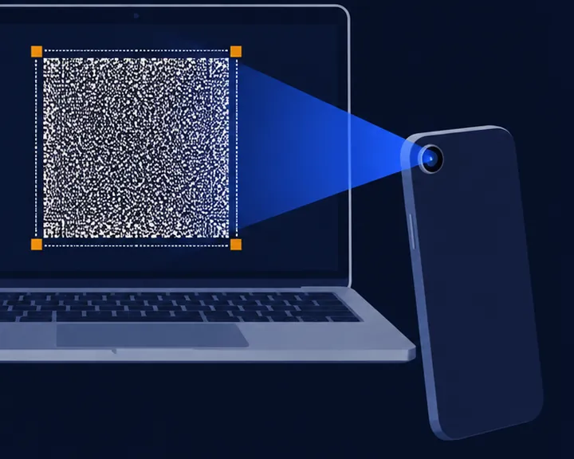
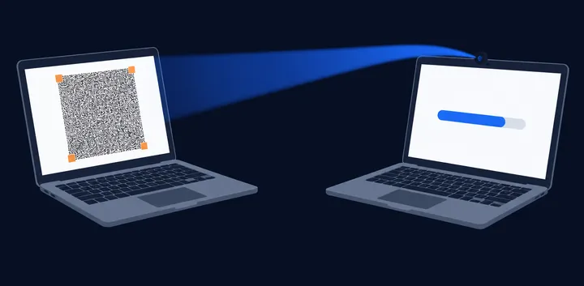
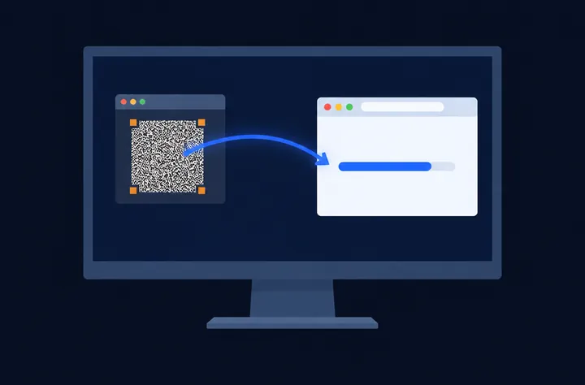
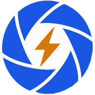

Files from any screen to a phone camera.
The file plays on the screen as a moving pattern, and the phone's camera reads it, checking every byte as it lands. No cable, no network, no account.
Both run in your browser. Your file is never uploaded anywhere.
Three ways to receive
Open the sender on the computer that has the file. Then pick whatever can see its screen.
-

A phone camera
On Android, open the LensBolt app and hold the phone up to the screen. Or open lensbolt.com/receive in the phone's browser and choose Phone camera.
On an iPhone, open lensbolt.com/receive in Safari.
-

A webcam
Another computer can read the screen through its webcam. Open lensbolt.com/receive there and choose Webcam.
-

A window on the same screen
Sending from a virtual machine or a remote desktop? Open the receiver on the computer itself and choose Share a window, then pick the window that shows the sender.
Every byte checked, nothing sent anywhere.
- The file arrives whole or not at all
- Each file carries its SHA-256. The receiver hands it over only once the hash it computes matches the sender's, and both screens show the hash, so you can compare them yourself.
- Light is the only link
- Nothing travels over a network: the screen shows, the camera reads. It works between machines that have never been connected to anything.
- Works offline after the first visit
- Open /send or /receive once and the browser keeps them, so they load with no connection at all. On an iPhone, Safari may clear them after a week without a visit; adding the page to the Home Screen keeps it.

Get the Android app
On Android, the LensBolt app is the quicker way to receive. It doesn't even ask for internet access: files reach it only through the camera.
Works from a USB stick
Both pages also come as single HTML files with everything inside. Copy them to a USB stick or an offline computer and open them in a browser: no install, no server, no internet.